GitHub is a platform built on top of Git , providing additional features like collaboration tools for teams,pull request for code review and hosting for respositories.
By leveraging Git and GitHub together , developers can streamline their workflows, enhance collaboration, and contribute to open-source projects worldwide
Click on the "Windows" ,"macOS" or "linux" button to download the latest version of Git for your version operating system .
The download should start automatically. Once it's complete, locate the downloaded executable file.
To run the installer:
Double-click the downloaded executable file to start the installation process.
Follow the instructions in the installation wizard. You can typically leave the default settings unchanged unless you have specific preferences.
Initializing a Git Repository
Before we can use git in our project, we need initialize a git repository inside that project.
A git repository is a storage location where GIT version control system manages and stores project’s files and revision history.
Checking if a project contains a git repository already is important to avoid reinitializing a git repository where there is already one which is a bad practice in git.
check if the project contains a git repository, run the command git status, if the project does not contain a git repository, you will get the message “fatal not a git repository…” this means that the project does not contain a git repository, any other message means that the project contains a git repository.
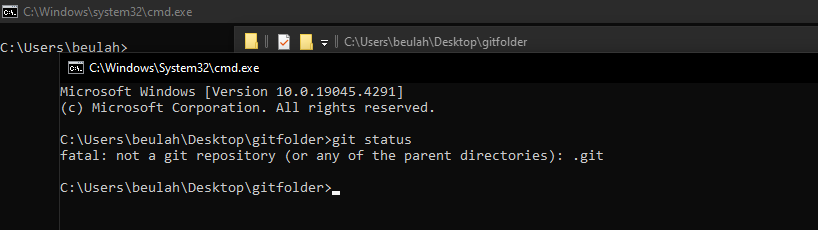
running a git status command
If the project/folder does not contain a git repository, can initialize/create a repository ,using the command git init,if a repository is initialized successfully, you will see the text “Initialized an empty git repository in…”
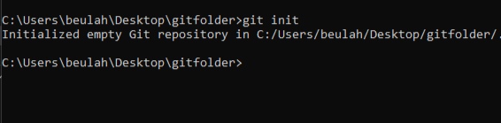
running a git status command
Committing Changes
A commit in git is a snapshot of changes made to a repository at a particular point in time.
Adding commits keeps track of our progress and changes as we work.
Git considers each commit change point or a save point, it is a point we can go back to in our project if we find a bug or we want to make a change.
We use git commit –m “commit message” commit changes to our repository
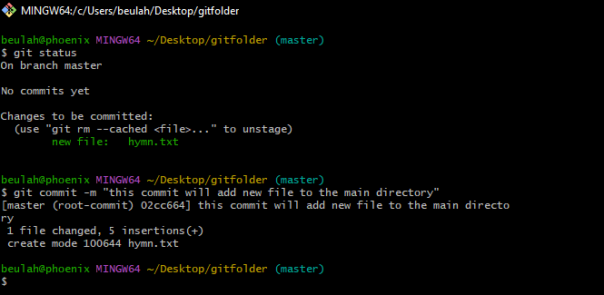
running a git commit
The commit command performs a commit and the -m “message” a message
Keep it Brief: Aim for a succinct message that is easy to read and understand at a glance. Avoid including unnecessary details or explanations.
Use Present Tense: Write commit messages in the present tense to describe what the changes do, not what you did. For example, "Add feature" instead of "Added feature".
Writing a good commit message is essential for maintaining a clear and organized project history. Here are some tips for writing effective commit messages:
Be Descriptive: Clearly describe the changes introduced by the commit. Use concise language that accurately conveys the purpose of the changes.
Start with a Verb:Begin the commit message with a verb in the imperative mood (e.g., "Add", "Fix", "Update"). This makes the message actionable and helps clarify what the commit does.
Provide Context:If necessary, provide additional context or background information about why the changes were made. This helps other developers understand the motivation behind the commit.
If we want we can view past commits using the git log command.
We can use git log --oneline if we want a bit more compressed output of git log.
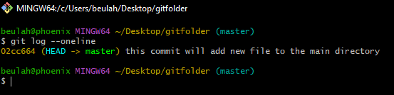
checking commit made earlier
Viewing all branches
We can then view all the branches we have using the command git branch
The branch with a * symbol its left is the active branch/the branch we are in
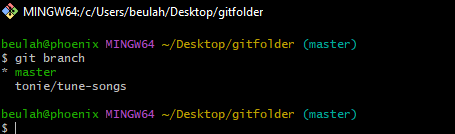
viewing all branches
Merging a branch
Once you finish working in your branch and you are comfortable that is what you want, we merge this branch to the master branch/ the main branch.
The master/main branch typically contains the latest, stable version of the codebase, it is here where all finished and tested features are integrated.
To merge a branch, add all the changes made in that branch to the staging area, then commit those changes.
After that, move to your master/main branch/the branch you want to merge this branch with.
We then use the command git merge branch-name to merge that branch.
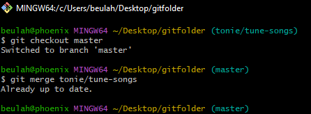
Merging tonie/tune-songs to master branch
What Is Git
Git is a version control system.
A version control system is a software tool that helps to track and manage changes to files, code, documents, and any other types of digital content over time.
In software engineering, git helps us to keep track of changes to code.
Git is also used to collaborate in code by several software engineers.
Git was developed by Linus Torvalds(Creator of Linux)
Git takes version control to the next level by being distributed. This means that every developer has a complete copy of the project's code repository on their local machine.
Other Version Control Systems
While Git is one of the most popular version control systems, there are others worth mentioning:
Subversion (SVN): A centralized version control system widely used before the rise of Git.
Mercurial (Hg): Similar to Git in functionality but with a different underlying architecture.
Microsoft Team Foundation Version Control (TFVC):It is a centralized version control system developed by Microsoft as part of the Azure DevOps suite (formerly known as Team Foundation Server).
Perforce (Helix Core): It is a commercial version control system popular in enterprise
However, in this blog, we'll focus on Git and its integration with GitHub.
Unlike centralized systems, such as SVN, where there's a single repository, Git allows developers to work offline and sync changes later.
This decentralization provides flexibility and resilience, making Git ideal for both small and large projects
Installing Git
Your operating system does not come with git installed by default (especially windows operating system).
To check if you have git installed in your machine or not:
Open the command prompt in windows or terminal in linux/macos.
Type the command git --version.
Hit enter.
If you have git installed, you should see something like: git version x.y
If not, then you will see an error message that the command is not recognized.
If you don’t have git installed, head over to and download git from there.
check version installed
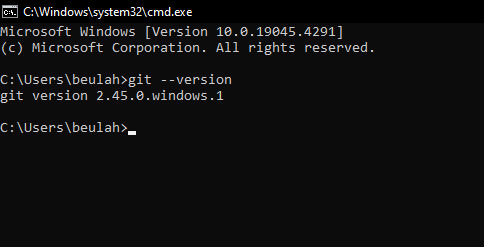
checking whether git is installed in your pc
Configuring Git
Now, let Git know who you are. This is an important step after installing git as each Git commit uses this information.
To let git know who you are, you pass in the username and email address.
To configure your username: git config --global user.name “your username”
To configure your email address: git config –global user.email “your email address”
configuration code
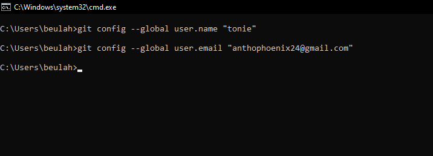
Configuring your Git name and password
Adding files to the staging area
The staging area, also known as the index, is an intermediate area between your working directory and the repository. It serves as a buffer where you can prepare changes before committing them to the repository.
You have created a git repository but it is empty. Now create a file inside the folder where you initialized git.
Use the command git status to verify that the file is part of the repo.
You will see your file under untracked files.This means that Git is aware of the file but it has not added it to our repository
Files in your github repository can be in one of the two states: tracked or untracked
Tracked files: are files that git know about and are added to the repository
Untracked files: These files are in our working directory and git knows about them but have not been added to the repository.
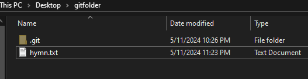
added file in our directory that untracked
add files to the staging area, you use the git add command followed by the name of the file(s) you want to stage you can use git add --all to all file.
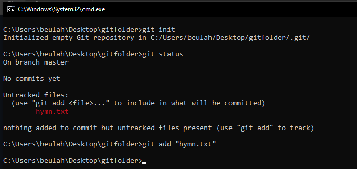
commands showing untracked file and it it tracking using git add command
Branches
A branch is a new/separate version of the main repository.
Branches allow multiple developers to work on different features, bug fixes, or experiments simultaneously without interfering with each other’s work.
Branches in Git are pointers to specific commits in the repository's history
Creating Branches
To create branch, we use the command git branch new-branch-name
Replace branch-name with the desired name for your branch. This command creates a new branch pointing to the same commit as the current branch.
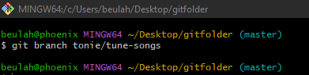
creating a new branch
Switching to active branches
The branch with a * symbol to its left is the active branch/the branch we are in, we can change branches using the command git checkout branch-name
Replace the branch name with the name of the branch that you want to switch to
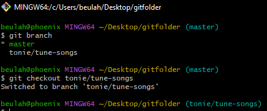
switching between branches
Deleting a branch
If we want/and are sure, we can then delete that branch using the command git branch –d branch-name
Replace the branch-name with the name of the branch you want to delete
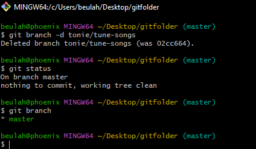
Deleted tonie/tune-songs from master branches
on running a git status, you discover that there is nothing to commit, a git branch command will actually show that the branch has been deleted
Compliments and Recommendations
Congratulations on learning the basics of Git! For your next steps, you can explore more advanced Git concepts, such as rebasing, resolving merge conflicts, or using Git hooks. Additionally, you can dive into GitHub and learn about collaboration features like pull requests, issues, and branching strategies. The possibilities with Git and GitHub are vast, so continue to explore and experiment with them.